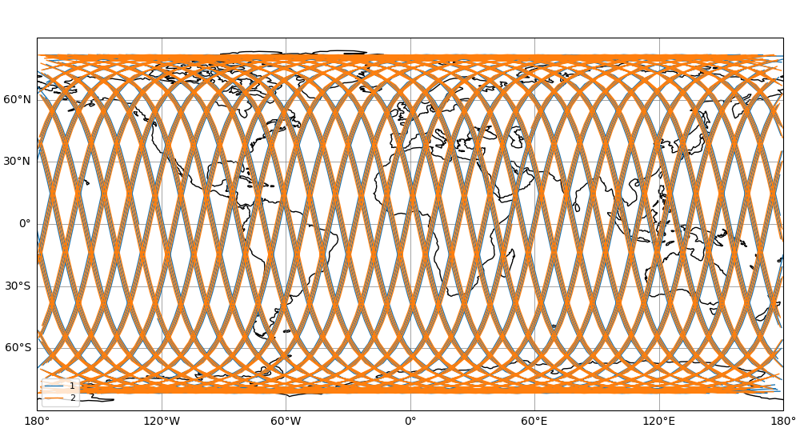
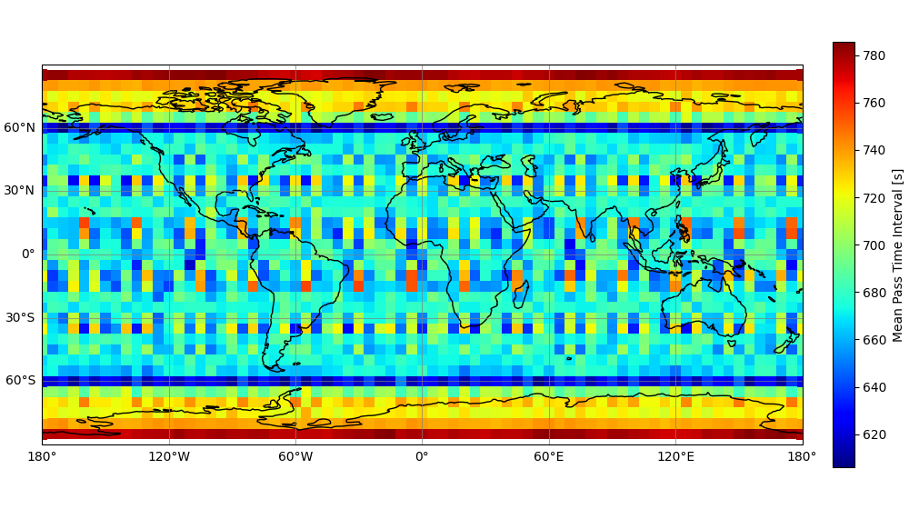
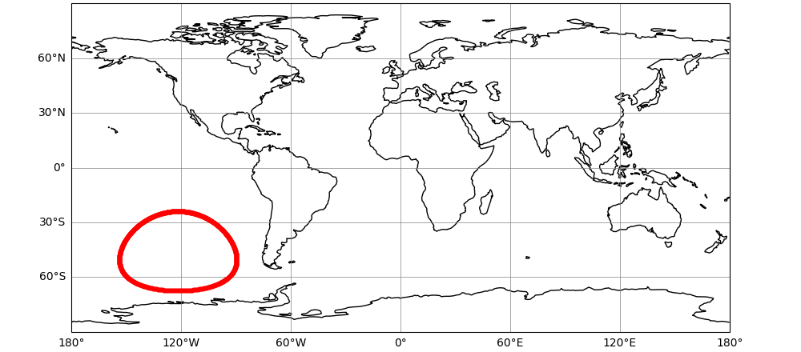
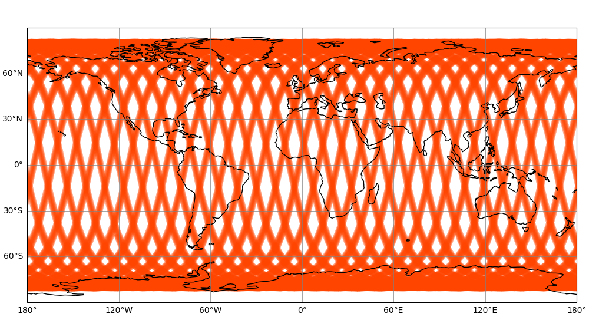
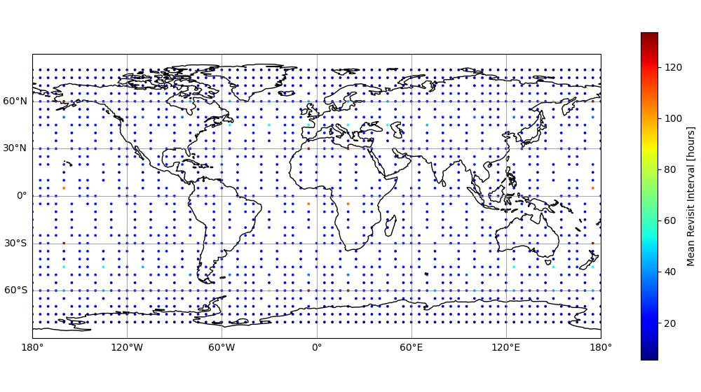
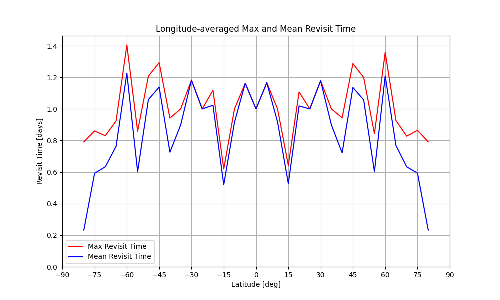

start MJD: 61072.0, stop MJD: 61078.0, size time steps in sec: 120.0
Scenario configuration
Simulation
StartDate
2026-02-01 00:00:00
StopDate
2026-02-07 00:00:00
TimeStep
120
IncludeStation2SpaceLinks
True
IncludeUser2SpaceLinks
True
IncludeSpace2SpaceLinks
False
OrbitsFromPreviousRun
False
OrbitPropagator
HPOP
HPOP force model
IntegratorMinStep
0.001
IntegratorMaxStep
300
IntegratorPositionTolerance
1.0
Mass
950
Geopotential
True
GeopotentialDegree
21
GeopotentialOrder
21
EarthPoleRotation
True
Drag
True
DragArea
5.0
DragCd
2.2
DragModel
NRLMSISE00
SolarRadiationPressure
True
SRPArea
15.0
SRPCr
1.5
ThirdBodySun
True
ThirdBodyMoon
True
ThirdBodyPlanets
False
SolidTides
True
OceanTides
False
Relativity
False
Space segment: CO2M
ConstellationID
1
NumOfSatellites
2
NumOfPlanes
1
ConstellationName
CO2M
ReceiverConstellation
1
ObsSwathStart
-125000.0
ObsSwathStop
125000.0
SatelliteID
Plane
EpochMJD
Altitude
Eccentricity
LTAN
ArgOfPerigee
MeanAnomaly
1
1
61072.0
735000
0.001
23.5
0.0
0.0
2
1
61072.0
735000
0.001
23.5
0.0
180.0
Ground segment
Type
ConstellationID
GroundStationID
GroundStationName
Latitude
Longitude
Height
ReceiverConstellation
ElevationMask
Downlink
1
1
Svalbard
78.229
15.408
450
1
5
Downlink
1
2
Inuvik
68.319
-133.549
90
1
5
User segment
Type
LatMin
LatMax
LonMin
LonMax
LatStep
LonStep
Height
ReceiverConstellation
ElevationMask
Grid
-85
85
-180
180
5
5
0
1
5
cov_ground_track
ConstellationID
1

cov_ground_track.png
cov_pass_time
ConstellationID
1
Statistic
Mean

cov_pass_time.png
cov_satellite_contour
ConstellationID
1
SatelliteID
1
ElevationMask
5

cov_satellite_contour.png
obs_swath_push_broom
Revisit
True
Statistic
Mean

obs_swath_push_broom.png

obs_swath_push_broom_revisit.png

obs_swath_push_broom_revisit_lat.png
orb_deltav_element
TargetType
Altitude
DeadBand
500
ConstellationID
1
SatelliteID
1
orb_deltav_element: no TargetValue given, using the initial Altitude of the simulation
orb_deltav_element: Altitude kept within +/- 500.0 of 725946 with 0 maneuver(s), total delta-v 0.000 m/s (0.0 m/s/year)